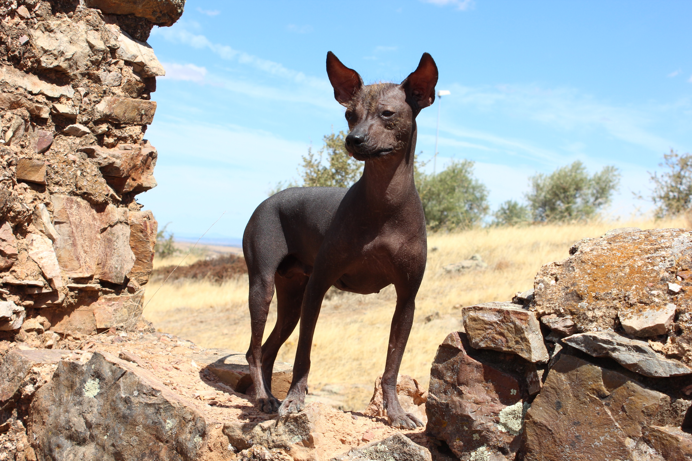
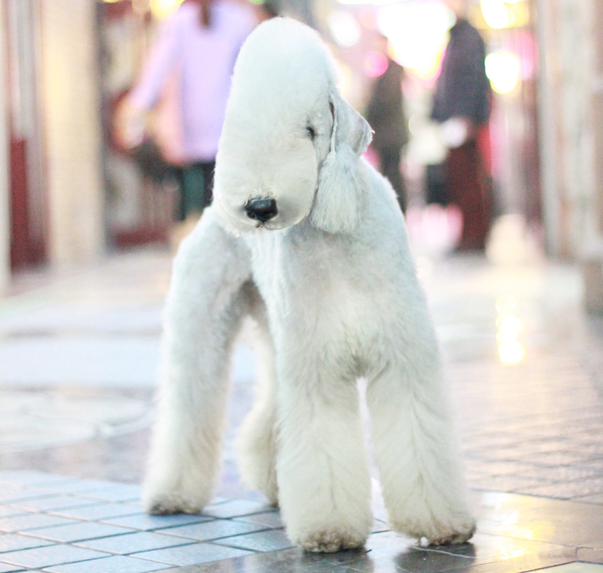
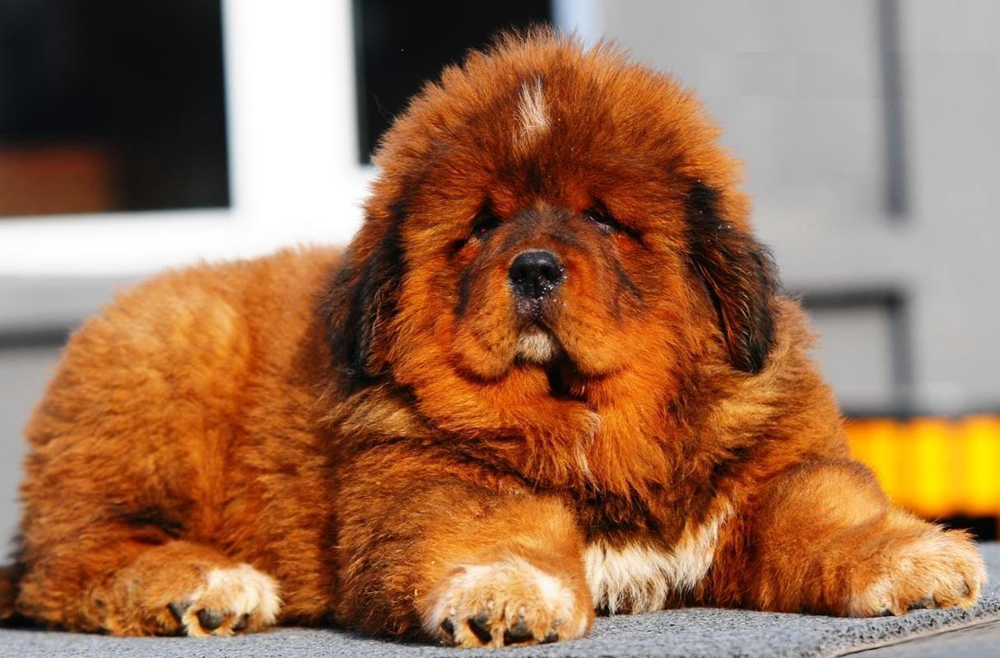
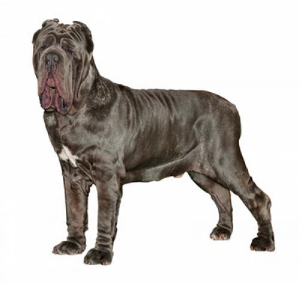

Las 6 de las razas de perro más extrañas
Es indudable que el mundo animal es capaz de sorprendernos cada día. En esta ocasión vamos a hacer una parada en algo de lo más peculiar y llamativo: los perros más raros (o feos) del mundo. Aunque muchas de las razas de perro que te mostraremos a continuación son indudablemente bonitas, es innegable que también son, cuanto menos, extrañas.
Crestado Chino

Elegido como el perro más feo del mundo en los últimos concursos de este tipo, podemos encontrar dos variedades: una con pelo llamada poder puff, y otra sin pelo. ¿Qué les caracteriza? Tienen dos grandes orejas y una cresta de pelo sedoso sobre la cabeza. Además, un ligero manto de pelo sobre los pies y en el extremo de la cola. Podemos ver un ejemplar en la película "101 Dálmatas", ya que la villana Cruella de Vil tiene uno. Su historia es poco conocida y confusa, pero se cree que estos animales ya existían en el siglo XIII en China, y que eran empleados como perros ratoneros en barcos mercantes.
Perro Peruano sin Pelo
La historia cuenta que los exploradores españoles descubrieron esta raza en las casas de la nobleza Inca cuando entraron por primera vez en este Imperio a principios del siglo XVI. Estos perros, fueron adorados por esta civilización y desempeñaron un papel importante, ya que participaban en actos ceremoniales. Han sido, además, reconocidos oficialmente como patrimonio nacional de Perú. Viringo o perro calato, esta raza delgada y elegante con una ausencia total de pelo, al igual que sucedía con el Catalburun, se debe a una accidente genético. Estos perros son más propensos a las enfermedades que cualquier otro.
Terrier Bedligton
 El pelaje de los perros de raza bedlington terrier hace que se asemejen a ovejas. Además, son muy esbeltos y generalmente altos, probablemente porque son una raza producto de la mezcla de los whippets y los caniches. Aún así, son indudablemente bonitos. Imitando a una oveja por la forma de su cráneo, tiene una gran acumulación de pelo en las patas, en la punta de las orejas y en la cabeza. Criada en el siglo XIX en Bedlington, Inglaterra, como resultado de cruces entre Caniche, el Dandie Dinmont Terrier y el Whippet.
Esta raza era usada por los mineros del norte del país como cazadores de ratas en las galerías.
Puli

Si tienes el privilegio de encontrarte con uno, solo distinguirás una masa de pelo redonda con la lengua colgando. Ya que no verás ni los ojos ni las orejas. Si hasta parece que no tiene cuello ni cola. Es el perro nacional de Hungría, y tiene unos rizos tan perfectos y originales que parece que está cubierto de rastas. Esto se debe a que el pelo crece hasta el suelo, para después convertirse en esto. Se cree que sus antepasados llegaron al país húngaro en el siglo IX cuando las tribus magiares del príncipe Arpad se instalaron en la puszta (estepa húngara). Aunque otra teoría afirma que fueron llevados por los mongoles. Durante el siglo XIX, el Puli se empleó como perro de guarda.
Dogo del Tibet
Está consolidado como un símbolo de estatus por su imponente presencia, muy similar a los leones. El Dogo del Tíbet, como también se le conoce, es el perro más caro del mundo. En marzo de 2016 se llegó a pagar hasta dos millones de euros por un ejemplar de esta raza. Excelentes perros para tirar de trineos y carruajes, era la antigua raza de trabajo que utilizaban los pastores nómadas del Himalaya y guardián tradicional de los monasterios tibetanos. Se trata de un perro que, debido a la densidad y volumen de su pelaje, se asemeja a un león. De hecho, al igual que sucede con estos felinos, los machos de raza mastín tibetano tienen más pelo que las hembras. No obstante, en esta raza, se valora mucho más la calidad del pelo que la cantidad.
Mastín Napolitano
Se trata de un perro de gran tamaño pero cariñoso. Adora a su familia y desconfía de los extraños. Esto les convierte en grandes perros guardianes, ya que son muy protectores y no dudarán en alejar a cualquier visitante no deseado. Estos perros no requieren mucho mantenimiento. Su origen se remonta al 700 a.C. Alejandro Magno cruzó sus perros de guerra gigantes con perros indios de pelo corto, creando la raza del Mosolo, que posteriormente siguió cruzándose con razas grandes para dar origen al mastín.
El Mastín Napolitano es uno de los perros más grandes del mundo. Requiere un dueño experimentado y es tranquilo e inteligente. Debe ser socializado desde muy pequeño y sin un entrenamiento adecuado, pueden volverse agresivos o destructivos. No son perros adecuados para dueños primerizos, ya que es necesario tener experiencia con perros dominantes. No es un perro recomendable para hogares con niños pequeños. Se trata de un perro que necesita compañía humana y disciplina. No necesita realizar mucho ejercicio físico.